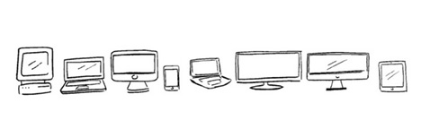

响应式Web设计
2013-04-25
响应式概念
“It is the nature of the web to be flexible, and it should be our role as designers and developers to embrace this flexibility, and produce pages which, by being flexible, are accessible to all.”
— A Dao of Web Design

Web设计面临问题
Ⅰ、需要兼容一系列不同操作系统、分辨率的设备
Ⅱ、不同的操作系统，交互方式存在很多差异
Ⅲ、移动设备层出不穷，新设备分辨率变数大
Ⅳ、国内移动流量收费高，移动用户需要更节省流量的网站

如何解决这些问题？
Ⅰ、针对不同设备，设计不同的UI、交互方式 X
Ⅱ、使用固定的模版，等比缩放适应不同的分辨率X
Ⅲ、用同一套HTML适配所有设备，根据UA判断加载所需文件 √
为什么用响应式设计？
Ⅰ、使用一套设计，兼容所有的平台和设备
Ⅱ、使用同一个URL，无需域名重定向
Ⅲ、降低维护成本，因为"响应式设计"只有一套布局
Ⅳ、能够更加方便统计不同设备下网站的流量
......
响应式设计流程
Ⅰ、明确需要兼容的设备类型、屏幕尺寸
Ⅱ、确定“响应区间”，制定不同的线框交互原型
Ⅲ、设计师根据线框图，设计不同尺寸对应的视觉稿
Ⅳ、前端进行HTML和CSS编码，并保持和视觉良好的沟通
Ⅴ、前后端约定加载、输出的文件和数据
......
Ⅰ、明确需要兼容的设备
现如今，PC、平板、智能手机屏幕尺寸大小不等，要完美的实现适配所有设备显然不太靠谱。
“响应式设计”其实可以先挑选主流的设备作为适配目标，其他尺寸的设备做宽度自适应处理即可。

Ⅱ、确定“响应区间”，设计交互原型
接下来我们便可以约定几个固定尺寸（比如：320px,480px，1024px...），以此为基准设定响应的区间值。
CSS框架lessframework也是采用这种思路，对PC到Mobile的过渡制定了几个“响应区间”，值得借鉴学习。
Ⅲ、确定“响应区间”，设计交互原型
交互稿只需要做固定尺寸的草图，但是需要标注出哪些是固定宽度，哪些是需要迎伸、扩张。
交互同学需要考虑可操作性，避免出现在移动设备不可点击，以及误操作现象。有兴趣可以看看Designing for Touch Screen这边文章，会对触屏设备设计有所帮助。
Ⅲ、视觉设计UI视图
1、UI风格尽量简单，最好能让前端同学用CSS3实现；
2、图标、背景应最好考虑纯色或者方便拉伸的渐变，避免维护多套图标和背景图片；
3、由于“响应式设计”常常需要通过百分比控制元素宽度，所以不要过分追求像素精准度。
Ⅳ、前端HTML、CSS编码
1、设置Meta标签，避免页面自动缩放尺寸；
2、抛弃传统的固定布局，使用流体的网格设计；
3、灵活处理图片、视频媒体展现；
4、使用媒体查询 Media Queries，为不同区间的分辨率做不同设计。
Ⅴ、前后端联调数据
后端开发与前端工程师协同起来，在“响应式设计”上也能做很多事情：
1、通过建立一个UA和分辨率匹配的库，能够判断用户访问的设备，从而做到加载不同的HTML结构、CSS样式。
2、为移动设备减少数据的输出。比如：PC每页显示20条数据，只给手机10条/页。
3、图片、视频媒体最消耗流量，同样需要为移动设备输出不同尺寸和格式的图片、视频。(PS:可以为移动设备尝试使用WebP图像格式)
响应式设计CSS框架
Ⅰ、Foundation 它是一款易用、强大并且灵活的框架，用于创建运行于任何设备上的网站原型和最终产品代码。
Ⅱ、Bootstrap 它由Twitter构建，是快速开发Web应用程序的前端工具包，提供了完美的响应式设计方案。
Ⅲ、Lessframework 它包含4个布局和3套预设布局,是一套自适应网站的CSS网格系统
Ⅳ、320 and Up 它使用一个小型屏幕样式表，以防止移动设备加载桌面资源。其中样式表中包含了一些颜色、排版布局等设置属性。
响应式开发工具
Ⅰ、Responsive Sketchsheets 一个Responsive草图制作工具，可以帮助你规划“响应区间”
Ⅱ、Grid Pak 一个响应式网页设计创建网格的工具，通过生成PNG图像、CSS和JavaScript创建响应式的简单界面
Ⅲ、Pixel To Em 帮助你快速换算Pixel、EM、Percent、Point单位，对写CSS很有帮助
Ⅳ、Edge Reflow 它是Adobe发布的一款可视化响应式设计工具，值得交互、视觉和前端都使用
Ⅴ、Adobe Dreamweaver CS6 DW CS6集成了JQueryMobile框架和一个非常友善的Fluid Grid Layout可视化工具
响应式调试工具
Ⅰ、模拟器：
Opera Mobile Emulator 一款电脑上模拟移动设备的浏览器，可以100%重现 Opera Mobile 手机浏览器的效果
Aptus 基于Mac系统，能方便的预定尺寸、截屏等
Ⅱ、浏览器插件：
resizer是一款Chrome 扩展
Viewport Resizer 能够完全自定义尺寸、手动的横竖屏切换，目前支持Chrome、Firefox、Safari
Ⅲ、在线Web调试：
Screenfly 对于不同分辨率调试非常方便，涵盖了很多设备
Screenqueri.es 和Screenfly功能相似，不过能直接拖拽改变页面宽度是个不错的功能
响应式设计案例
Ⅰ、Responsive Images 响应式图片解决方案
Ⅱ、The Next Web 为了满足读者手机阅读需求，2012年年底进行了一场响应式改革
Ⅲ、 MediaQueri.es 一个国外响应式网站集合，目前收录了将近500个网站。
响应式设计图书
Ⅰ、《响应式Web设计实践》
http://book.douban.com/subject/21263576/
Ⅱ、《响应式Web设计:HTML5和CSS3实战》
http://book.douban.com/subject/20390374/
参考资料
Thank You！